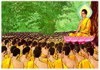

|
วันมาฆบูชา
วันสำคัญทางพระพุทธศาสนา อันดับที่
๑ ของทุกปี มีชื่อเรียกอีกอย่างหนึ่งว่า "วันจาตุรงคสันนิบาต"
ความเป็นมาของวันมาฆบูชา
วันมาฆบูชา
เป็นวันสำคัญทางพระพุทธศาสนาวันหนึ่งที่พุทธศาสนิกชน (ชาวพุทธ)
จะพร้อมใจกันทำบุญ เป็นกรณีพิเศษกว่าปกติ เพื่อระลึกถึงพระคุณของพระสัมมาสัมพุทธเจ้า
พระธรรม และพระสงฆ์ซึ่งตรงกับวันเพ็ญ เดือน ๓ ของทุก ๆ ปี ในวันมาฆบูชานี้
เป็นวันคล้ายวันที่พระพุทธเจ้าทรงแสดงโอวาทปาติโมกข์ นับว่าเป็นวันที่พระพุทธศาสนาได้วางรากฐานมั่นคง
เรียกวันดังกล่าวนี้ว่า "วันจาตุรงคสันนิบาต" ซึ่งแปลว่า
วันที่มีการประชุมที่ประกอบด้วยองค์ ๔ ประการ คือ.-
๑.พระภิกษุสงฆ์จำนวน
๑,๒๕๐ รูป มาประชุมกันโดยมิได้นัดหมาย
๒.พระภิกษุสงฆ์เหล่านั้นล้วนเป็นพระอรหันต์ทั้งสิ้น
๓.พระภิกษุสงฆ์เหล่านั้นล้วนเป็นเอหิภิกขุอุปสัมปทา
คือ พระพุทธเจ้าทรงเป็นผู้บวชให้เองทั้งสิ้น
๔.วันประชุมนั้นเป็นวันเพ็ญเดือนมาฆะ
(เดือน ๓)
เมื่อเกิดเหตุการณ์ที่น่าอัศจรรย์เช่นนี้
พระพุทธองค์จึงทรงถือโอกาสแสดงโอวาทปาติ โมกข์ คือ คำสอนที่เป็นหลักสำคัญ
ในทางพระพุทธศานา ในท่ามกลางพระอริยสงฆ์นั้น นับเป็นเหตุการณ์เกิดขึ้นเพียงครั้งเดียวเท่านั้นตลอดพุทธกาล
โอวาทปาติโมกข์นั้นเป็นคำประพันธ์ ๓ พระคาถาครึ่ง ซึ่งมีเนื้อหาโดยย่อดังต่อไปนี้
.-
พระคาถาที่
๑ ตรัส ๓ หัวข้อ ได้แก่
๑.ขันติ
คือ ความอดทนเป็นตบะอย่างยิ่ง
๒.ผู้รู้กล่าวว่าพระนิพพานเป็นสิ่งยอดเยี่ยม
๓.ผู้ที่ยังฆ่า
ทำร้าย เบียดเบียนผู้อื่น สัตว์อื่นอยู่ ไม่ชื่อว่าเป็นสมณะ
เหตุที่พระองค์ยกขันติธรรมขึ้นตรัสนั้น
แสดงว่าศาสนธรรมคำสั่งสอนของพระองค์เป็นไปเพื่อให้อดทนต่อความหนาว
ร้อน หิวกระหาย ถ้อยคำที่ให้ร้ายใส่ความด่าว่า และอดทนต่อทุกขเวทนาอันแรงกล้าที่เกิดขึ้นจากความเจ็บไข้
ไม่สบาย, ทีทรงสรรเสริญพระนิพพานว่าเป็นสิ่งที่ยอดเยี่ยมนั้น
แสดงว่า ผลแห่งการปฏิบัติตามหลักธรรมคำสั่งสอน
ในทางพระพุทธศาสนา เป็นอย่างสูงสุดนั้นคือ ทำจิตใจไม่ให้ ตัณหา
คือ ความทะยานอยาก รัดรึงไว้ได้ และที่ตรัส
ติเตียนบรรพชิตผู้ที่ยังฆ่า ทำร้าย เบียดเบียนผู้อื่น สัตว์อื่นอยู่
ไม่ชื่อว่าเป็นสมณะ นั้น แสดงว่า ศาสนธรรมคำสั่งสอน
ของพระพุทธองค์เป็นไปเพื่อ ความมีเมตตากรุณาต่อสัตว์ทั้งปวง
พระคาถาที่
๒ ทรงตรัสแสดง ๓ หัวข้อ ได้แก่.-
๑.การไม่ทำบาปทั้งปวง
๒.การทำกุศลให้ถึงพร้อมบริบูรณ์
๓.การทำจิตของตนให้บริสุทธิ์ผ่องใส
ทั้ง ๓ อย่างนี้เป็นคำสอนของท่านผู้รู้ทั้งหลาย
ข้อที่ห้ามการทำบาป
และทำกุศลให้ถึงพร้อมนั้น แสดงว่าพระพุทธศาสนาไม่เป็นแต่เพียงสอนให้เว้นจากความชั่ว
หรือบาป ทั้งทางกาย วาจา และใจเท่านั้น หากแต่ยังสอนให้ทำความดีหรือบุญกุศลทั้งทางกาย
วาจา และใจอีกด้วย การเว้นจาก การฆ่ากัน เบียดเบียนกันแล้วนอกจากจะได้บุญ
ยังเป็นการช่วยอุปถัมภ์ค้ำชู บำรุงชีวิตและความสุขของกันและกันอีกด้วย
และที่พระองค์ทรงแสดงเรื่อง การทำจิตของตนให้บริสุทธิ์ผ่องใส
นั้น แสดงว่าความบริสุทธิ์ผ่องใสปราศจากกิเลส เครื่องเศร้าหมองใจคือ
ความโลภ ความโกรธ ความหลง นับว่าข้อที่ ๓ นี้เป็นข้อที่สำคัญที่สุด
เพราะว่าคนทั้งหลาย มีใจเป็นหัวหน้า มีใจประเสริฐที่สุด คนเราจะทำความดีความชั่ว
ก็เพราะใจ กล่าวคือ เมื่อจิตใจบริสุทธิ์แล้ว จะทำอะไร จะพูดอะไร
ก็ดีไปตามหมดทั้งสิ้น แต่ถ้าจิตใจเศร้าหมอง ด้วยกิเลสแล้ว จะทำอะไร
จะพูดอะไร ก็จะชั่วไปตาม กล่าวคือล้วนเป็นไปในทางทุจริตทั้งสิ้น
พระคาถาที่
๓ กับอีกกึ่งพระคาถาพระองค์ทรงตรัส ๖ หัวข้อ ได้แก่.-
๑.การไม่พูดจาว่าร้ายข้อนขอดใคร
๒.ความไม่กระทบกระทั่งประหัตประหารกัน
๓.การสำรวมระวังในพระปาติโมกข์
๔.ความรู้จักประกาณในการบริโภคอาหาร
๕.การอยู่ในเสนาสนะที่นังที่นอนอันสงัด
๖.การประกอบความเพียรในทางจิตอย่างสูง
(การฝึกจิตให้สงบ)
การที่พระพุทธองค์ตรัสหัวข้อทั้ง ๖ นี้แสดงให้เห็นว่า การพูดจาข้อนขอดกัน
การพูดเสียดสีแดกดัน การ
ทะเลาะกัน การชกต่อยกัน ทำร้ายกัน ไม่เป็นสิ่งที่ดีเลยสำหรับหมู่สมณะ
สมณะมณฑลสมควร มีขนบธรรมเนียม
เป็นแนวทางนำความประพฤติอันสงบเรียบร้อย ไม่เป็นผู้เห็นแก่กิน
ยินดีในที่อยู่ที่อาศัยที่เงียบสงัด บำเพ็ญสมาธิ
ภาวนารักษาจิตใจของตนเองให้เป็นสมาธิสะอาด สว่าง สงบทุกเมื่อ
พระสาวกผู้เที่ยวสั่งสอนพระศาสนธรรมคำสั่งสอนของพระพุทธเจ้า
คงยกเอาพระธรรมในโอวาทปาติโมกข์นี้ขึ้น เป็นหลักสำคัญในการเผยแพร่พระพุทธศาสนา
แม้แต่พระพุทธ องค์เองก็ทรงยกมาตรัสประทานโอวาท แก่พระภิกษุสงฆ์ในวันอุโบสถทุกกึ่งเดือน
และทรงมางดเสียเมื่อครั้งพระองค์ได้ทรงอนุญาตให้พระภิกษุสงฆ์
เอาสิกขาบทที่พระองค์ทรงบัญญัติไว้นั้น มาสวดในที่ประชุมสงฆ์ทุกกึ่งเดือนแทน
เรียกว่า สวดพระปาติโมกข์ ซึ่งพระภิกษุสงฆ์ได้ปฏิบัติสืบต่อ
ๆ กันมาจนกระทั่งปัจจุบันนี้
ในวันเพ็ญ
เดือนมาฆะ (เดือน ๓) ต่อมานั้นยังมีเหตุการณ์เกิดขึ้นอีกประการหนึ่งในสมัยพุทธกาล
กล่าวคือเป็นวันที่พระพุทธเจ้าทรงปลงอายุสังขาร ที่ปาวาลเจดีย์
แคว้นวัชชี เนื่องจากขณะนั้นพระพุทธองค์ทรงมีพระชนมายุได้ ๘๐
พรรษา พระองค์ได้ทรงพิจารณาเห็นว่า "มีพุทธบริษัท ๔ ครบบริบูรณ์แล้ว
และพระพุทธศาสนาได้เจริญมั่นคงแล้ว" จึงได้ตัดสินพระทัยว่า
นับแต่นี้ไปอีก ๓ เดือน จะปรินิพพาน" การที่พระพุทธองค์ทรงตัดสินและอธิษฐานพระทัยจะปรินิพพานนี้เรียกว่า
ทรงปลงพระชนมายุสังขาร
เมื่อมีเหตุการณ์พิเศษเกิดขึ้น
๒ อย่างในวันขึ้น ๑๕ ค่ำ เดือน ๓ เช่นเดียวกันเช่นนี้ จึงนับได้ว่า
เป็นวันสำคัญวันหนึ่งในพระพุทธศาสนา สมควรที่ชาวพุทธจะแสดงความระลึกถึงและจัดพิธีบูชาให้เป็นกรณี
พิเศษกว่าวันพระตามปกติ
ความเป็นมาของการประกอบพิธีวันมาฆบูชาในประเทศไทย
พระบาทสมเด็จพระจอมเกล้าเจ้าอยู่หัว
รัชกาลที่ ๔ แห่งกรุงรัตนโกสินทร์ พระองค์ทรงมองเห็นความสำคัญของวันนี้
จึงได้โปรดให้มีพระราชพิธีประกอบการกุศลขึ้นในวัดพระศรีรัตนศาสดารามเมื่อ
พ.ศ. ๒๓๙๕ และให้เป็นงานหลวงตลอดไป ต่อมาได้แพร่กระจายไปตามวัดต่าง
ๆ ทั่วประเทศและทางราชการ ก็จัดให้เป็นวันหยุดราชการ ๑ วัน เพื่อให้ข้าราชการได้มีโอกาสบำเพ็ญบุญกุศลในวันดังกล่าวนี้อีกด้วย
กิจที่ชาวพุทธนิยมปฏิบัติในวันมาฆบูชา
ในวันสำคัญในทางพระพุทธศาสนาวันนี้
ชาวพุทธจะร่วมกัน
-ทำบุญตักบาตร
-ไปวัด,
สมาทานศีล รักษาศีล
-ฟังเทศน์-ฟังธรรม
สนทนาธรรม
-ทำวัตรสวดมนต์
-
ถวายภัตตาหารเช้า-เพล แด่พระสงฆ์
-เจริญสมาธิภาวนา
-บำเพ็ญสาธารณประโยชน์ต่าง
ๆ และ
-
เวียนเทียน
โดยเฉพาะการเวียนเทียนนั้น
ทางวัดต่าง ๆ จะประกาศให้ทราบ โดยทั่วกัน ซึ่งจะกำหนดเวลาเวียนเทียนจะเป็นตอนเช้า
ตอนสาย ตอนบ่าย ตอนค่ำ ก็ได้ สุดแล้วแต่ความสะดวกของวัดนั้น
ๆ ส่วนในกรุงเทพมหานครมักจะจัดให้มีการเวียนเทียนในเวลากลางคืน
ประมาณ ๑๙.๐๐น. หรือ ๒๐.๐๐ น. ชาวบ้านจะถือดอกไม้ ธูปเทียนไปประชุมพร้อมเพรียงกันที่หน้าอุโบสถหรือปูชนียวัตถุ
ที่สำคัญในวัด แล้วแต่ว่าทางวัดนั้น ๆ จะจัดทำให้มีการประกอบพิธีในที่ใด
บางครั้งชาวบ้านจะหาซื้อดอกไม้ ธูปเทียนได้ในบริเวณวัดนั้นอีกด้วย
เมื่อถึงกำหนดเวลาแล้ว
พระสงฆ์ สามเณร ก็จะมาประชุมพร้อมเพรียงกันใน ที่นัดหมายไว้จะมีการทำวัตรสวดมนต์
เพื่อระลึกถึงพระคุณ ของพระพุทธเจ้า พระธรรม และพระสงฆ์ หลังจากนั้น
ก็จะมีการแสดงพระธรรมเทศนา ให้พุทธศาสนิกชนที่มาร่วมงานได้ฟัง
เพื่อประดับสติปัญญาและเกิดเป็นบุญกุศล ศิริมงคลตามสมควรแก่เวลา
แล้วประธานสงฆ์ในพิธีนั้นจะนำกล่าวคำบูชาเนื่องในวันมาฆบูชา
เสร็จแล้วก็จะมีการเวียนเทียน โดยมีพระสงฆ์ สามเณร เป็นผู้เดินนำ
และพุทธศาสนิกชนทั่วไปเดินตามลำดับกัน น้อมจิตใจระลึกนึกถึงพระคุณของพระตรัยด้วยอาการอันสงบ
โดยจัดแบ่งเป็นแถว ๆ ละ ๆ ๔ คนบ้าง ๕ คนบ้าง ซึ่งก็แล้วแต่ความกว้างแคบของ
บริเวณ ถือดอกไม้ ธูปเทียนที่จุดเสร็จแล้ว เดินเวียนขวา (ทำประทักษิณ)
รอบอุโบสถหรือปูชนียวัตถุที่สำคัญในวัดนั้น ๆ เมื่อครบ
๓ รอบแล้วนำดอกไม้ธูปเทียนนั้นไปปักในที่ที่จัดไว้เป็นอันเสร็จพิธีเวียนเทียน
ต่อ
จากนั้นบางวัดอาจจัดให้มีการเทศน์ โดยมักจะเทศน์เรื่องโอวาทปาติโมกข์
และสวดโอวาท ปาติโมกข์ อาจสวดก่อนหรือหลังเทศน์ก็ได้ บางวัดจัดให้มีเทศน์
เรื่องอื่น ๆ อีกตามสมควร
เฉพาะที่วัดท่าไทร
จังหวัดสุราษฎร์ธานี จัดให้มีการประกอบพิธีกรรมในภาคค่ำ โดยเริ่มต้นตั้งแต่เวลา
๑๘.๐๐ น. มีการทำวัตรพระสวดมนต์ ไหว้พระ รับศีล ฟังธรรม บรรยายธรรม
เสร็จแล้วประธานสงฆ์จะนำกล่าวคำถวายดอกไม้ ธูปเทียนเนื่องในวันมาฆบูชา
ซึ่งทุกคนในพิธีก็จะกล่าวตามท่าน เสร็จแล้วพระสงฆ์จะนำเวียนเทียน
(ทำประทักษิณ) รอบอุโบสถ หรือปูชนียวัตถุที่สำคัญในวัดนั้น ๆ
เมื่อครบ ๓ รอบแล้วนำดอกไม้ธูปเทียนนั้นไปปักในที่ที่จัดไว้
เป็นอันเสร็จพิธีเวียนเทียน
คำถวายดอกไม้ธูปเทียนเนื่องในวันมาฆบูชา
อัชชายัง
มาฆะปุณณะมี สัมปัตตา มาฆะนักขัตเตนะ ปุณณะจันโท ยุตโต ยัตถะ
ตะถาคะโต อะระหัง สัมมาสัมพุทโธ จาตุรังคิเก สาวะกะสันนิปาเต
โอวาทะปาติโมกขัง อุททิสิ ตะทา หิ อัฑฒะเตระสานิ สัพเพสังเยวะ
ขีณาสะวานัง สัพเพ เต เอหิภิกขุกา สัพเพหิ เต อะนามันติตา วะ
ภะคะวะโต สันติกัง อาคะตา เวฬุวะเน กะลันทะกะนิวาเป มาฆะปุณณะ-มิยัง
วัฑฒะมานะกัจฉายายะ ตัสมิญจะ สันนิปาเต ภะคะวะตา วิสุทธูโปสะถัง
อะกาสิ อะยัง อัมหากัง ภะคะวะโต เอโกเยวะ สาวะกะสันนนนิปาโต
อะโหสิ จาตุรังคิโก อัฑฒะเตระสานิ ภิกขุสะตานิ สัพเพสังเยวะ
ขีณาสะวานัง มะยันทานิ อิมัง มาฆะปุณณะมี นักขัตตะสะมะยังตักกาละสะทิสัง
สัมปัตตา จิระปะรินิพพุตัมปิ ตัง ภะคะวันตัง อะนุสะระมานา อิมัสมิง
ตัสสะ ภะคะวะโต สักขิภูเต เจติเย อิเมหิ ทีปะธูปะปุปผาทิสักกาเรหิ
ตัง ภะคะวันตัง ตานิ จะ อัฑฒะเตระสานิ ภิกขุสะตานิ อะภิปูชะยามะ
สาธุโน ภันเต ภะคะวา สะสาวะกะสังโฆ สุจิระปะรินิพพุโต คุเณหิ
ธะระมาโน อิมิ สักกาเร ทุคคะตะปัณณา การะภูติ ปะฏิคคัณหาตุ อัมหากัง
ทีฆะรัตตัง หิตายะ สุขายะ
คำแปล
วันนี้
มาประจวบวันมาฆปุรณมี เพ็ญเดือน ๓ พระจันทร์เพ็ญประกอบด้วยฤกษ์มาฆะ
ตรงกับวันที่ พระตถาคตอรหันต์สัมมาสัมพุทธเจ้า ได้ทรงแสดงโอวาทปาติโมกข์ขึ้น
ในที่ประชุมสาวกสงฆ์พร้อมด้วยองค์ ๔ ประการ ครั้งนั้น พระภิกษุ
๑,๒๕๐ องค์ ล้วนแต่เป็นพระผู้สิ้นอาสวะกิเลส อุปสมบทด้วยเอหิภิกขุอุปสัมปทา
ไม่มีผู้ใดเรียกมาประชุมยังสำนักพระผู้มีพระภาค ณ เวฬุวนาราม
เวลาตะวันบ่าย ในวันมาฆปุรณมี และสมเด็จพระผู้มีพระภาคเจ้า ได้ทรงทำวิสุทธอุโบสถ
ทรงแสดงโอวาทปาติโมกข์ขึ้น ณ ที่ประชุมนั้น การประชุมสาวกสงฆ์พร้อมด้วยองค์
๔ ของพระผู้มีพระภาคเจ้าแห่งเราทั้งหลายนี้ ได้มีครั้งเดียวเท่านั้น
พระภิกษุ ๑,๒๕๐ องค์ล้วนแต่เป็นพระผู้สิ้นอาสวะกิเลส บัดนี้เราทั้งหลายมาประจวบ
มาฆปุรณมีนนักขัตตสมัยนี้ ซึ่งคล้ายกับวัน จาตตุรงคสันนิบาตนั้นแล้ว
มาระลึกถึง พระผู้มีพระภาคนั้น แม้ปรินิพพานนานมาแล้ว จะเคารพบูชาพระผู้มีพระภาคและพระภิกษุสงฆ์
๑,๒๕๐ องค์นั้น ด้วยสักการะทั้งหลายมีเทียนธูปและดอกไม้เป็นต้น
เหล่านี้ในเจดียสถานนี้ ซึ่งเป็นพยานของพระผู้มีพระภาค พร้อมด้วยสาวกสงฆ์
ข้าแต่พระองค์ผู้เจริญ ขอเชิญพระผู้มีพระภาคเจ้า พร้อมด้วยพระสงฆ์สาวกเหล่านั้น
แม้ปรินิพพานนานมาแล้วด้วยดี ยังเหลืออยู่แต่พระคุณทั้งหลาย
จงทรงรับสักการบรรณาการของคนยากเหล่านี้ ของข้าพระพุทธเจ้าทั้งหลาย
เพื่อประโยชน์ เพื่อความสุข แก่ข้าพระพุทธเจ้าทั้งหลาย ตลอดกาลนาน
เทอญ ฯ
จุดมุ่งหมายแห่งการถวายสักการะในวันมาฆบูชา
จุดมุ่งหมายแห่งการถวายสักการะบูชาเนื่องในวันมาฆบูชานั้น
ข้อสำคัญอยู่ที่การระลึกถึงพระคุณ ของพระพุทธเจ้า พระธรรม พระสงฆ์
ระลึกถึงพระโอวาทที่พระพุทธองค์ทรงได้แสดงในท่ามกลางพระอริยสงฆ์
๑,๒๕๐ รูป แม้เวลาจะได้ผ่านล่วงเลยมากว่า ๒,๕๐๐ ปีแล้วก็ตาม
ย่อมจะน้อมนำให้เกิดความเชื่อ ความเลื่อมใสในพระธรรมและพระพุทธจริยาวัตรของพระพุทธองค์
ชวนให้เกิดอุตสาหะพยายามในการประพฤติปฏิบัติตนตาม หลักคำสอน
ตามกำลังความสามารถในชีวิตประจำวันสืบต่อไป มิใช่เพียงแต่ไปร่วมถวายดอกไม้
ธูปเทียน เวียนเทียน ฟังพระธรรมเทศนา ตามวัดวาอารามต่าง ๆ พอเป็นพิธีเท่านั้น
บาป อกุศล ทุจริตที่ประจำอัธยาศัย เคยมีอยู่อย่างใด ก็คงที่อยู่อย่างนั้น
วิธีปฏิบัติเช่นนี้ ถึงจะมีอายุและเคยผ่านพิธีมาฆบูชามามากเพียงใด
ก็หาได้ลดลาวาศอกในการทำบาป และเสริมสร้างบุญกุศลเมตตาอารีย์และมีจิตใจที่สะอาดผ่องใสได้
ไม่ชวนให้น่าเสียดายราคาค่าดอกไม้ ธูปเทียน ที่ต้องจับจ่ายมาบูชาบ้าง
ค่าพาหนะไป-มาบ้าง ที่สุดจนกระทั่งวัน เวลา ที่ผ่านหมดไปโดยไม่เกิดประโยชน์พอสมกัน
คงปลื้มใจอยู่แต่เพียงว่าได้ไปทำพิธีที่วัดแล้ว ไม่เสียปีเสียเดือน
ส่วนข้อวัตรประพฤติปฏิบัติที่เป็นศีลธรรมจริยธรรม เป็นบุญกุศล
มักจะไม่ได้ติดตามตนจนถึงบ้าน ขาดตกบกพร่อง เสียเพียงแค่ประตูวัดเป็นส่วนมาก
เมื่อไม่มีบุญเก่าเป็นพื้นฐานส่งเสริมบุญใหม่ให้ทวียิ่ง
ๆ ขึ้นไปทุกคราว มาฆบูชาก็สำเร็จบุญเพียงอามิสบูชาเพียงชั่วไฟไหม้ธูปเทียนหมดเล่มเท่านั้น
น้อยนักที่จะสำเร็จบุญถึงปฏิบัติบูชา ตั้งตนอยู่ในศีลธรรมทั้งในที่ลับและที่แจ้ง
สมกับที่พระพุทธเจ้าทรงยกย่องสรรเสริญได้เลย ในวันมาฆบูชาเช่นนี้
น่าที่ผู้ที่เป็นชาวพุทธจะได้สำนึกถึงการถวายปฏิบัติบูชา เปลี่ยนนิสัยเข้าถือหลักธรรม
ให้เป็นพุทธบูชาอย่างยิ่งสักปีละอย่าง เช่นในปีนี้ ก็ขอให้คอยย้อนพิจารณาความประพฤติของตนเองอยู่เสมอว่า
ได้ประพฤติปฏิบัติตนตามหลักคำสอนของพระพุทธเจ้าอย่างไรบ้างหรือไม่
อบายมุขทางแห่งความเสื่อมเสีย มีเล่นการพนัน ชอบเที่ยวเตร่ ดื่มสุราเมรัย
เป็นต้น เหล่านี้ได้เจริญ-อบรมจนติดเป็นนิสัยแล้วหรือไม่ เมื่อรักตนเองจริง
ก็ควรจะยุติธรรมต่อตนเองจริง ๆ เห็นส่วนชั่วส่วนบาปยังมีอยู่
ในตนเองอย่างไรต้องยอมรับผิดตามความเป็นจริง พยายามลด ละ เลิก
เพื่อถวายพระเสียบ้าง ถวายได้ เพียงปีละอย่าง สองอย่าง มากปีก็จะละได้หมด
ส่วนดี
ส่วนบุญ ส่วนกุศลก็ต้องยุติธรรมเช่นเดียวกัน อย่าหลงเข้าข้างตนจนเกินไป
ทำบุญสักชั่วโมงเดียว ก็คิดเอาอานิสงส์เป็นจำนวนปี หรือทำดีเพียงอย่างเดียว
แต่ส่วนที่ชั่วยังแอบปิดบังซ่อนเร้นไว้อีกมากมาย ก็มักจะทวงอานิสงส์บุญไม่รู้จบ
ฝึกหัดปฏิบัติตนคือคอยระวัง งดเว้น ละเลิกบาปความชั่วที่เคยทำให้ค่อย
ๆ หมดไป ระวังไม่ให้บาปใหม่ เพิ่มเติมขึ้นอีก คอยอบรมสะสมกระทำความดี
เก็บเล็กผสมน้อย ฝึกฝนปฏิบัติตนอยู่เสมอไม่เลือกว่าเวลาไหน จะเป็นดิถีพิเศษ
หรือไม่ก็ตาม พระพุทธองค์ย่อมทรงยกย่องผู้ที่บูชาพระองค์ด้วยการ
ปฏิบัติบูชาว่าเป็นการบูชาอย่างยิ่ง
อนึ่ง
เมื่อท่านพุทธศาสนิกชนได้ประพฤติตนให้เป็นการบูชาอย่างยิ่งเช่นนี้
มิใช่แต่จะเกิดคุณประโยชน์เฉพาะแก่ตนเองเท่านั้น หากแต่อนุชนรุ่นหลัง
ลูกหลาน เพื่อนบ้านใกล้เรือนเคียง ตลอดจนผู้ที่พบเห็นทั่วไป
ย่อมจะนิยม ยกย่อง เคารพ นับถือเป็นตัวอย่าง แบบอย่างที่ดี ที่จะชักนำให้นิยมประพฤติปฏิบัติความดีตามกันยิ่ง
ๆ ขึ้นไปอีกโสดหนึ่งด้วย ดูพระสัมมาสัมพุทธเจ้าและพระสาวกเถิด
ท่านได้บำเพ็ญความดีไว้จนล้นเหลือ จึงเป็นตัวอย่างของการกระทำความดีสืบต่อมาตลอดเวลากว่า
๒,๕๐๐ ปีที่ผ่านมาจนกระทั่งบัดนี้ก็ยังได้รับการยกย่อง นับถือ เคารพ สักการะบูชามืเสื่อมคลาย จึงสมควรอย่างยิ่งที่ที่พวกเราชาวพุทธทุกคนจะถวายความเคารพบูชา
ด้วยการเปลี่ยนนิสัยที่ไม่ดีเสีย แล้วหันเข้าหาหลักธรรมคำสั่งสอนของพระพุทธองค์
ระลึกถึงพระคุณ ของพระองค์ บูชาพระองค์ด้วยการประพฤติปฏิบัติตามหลักคำสอนของพระองค์ตามกำลังความสามารถ เริ่มตั้งแต่วันมาฆบูชานี้เป็นต้นไปด้วยกันทุกคนเทอญ...!
*******************************************
หลักธรรมที่ควรนำไปประพฤติปฏิบัติ
หลักธรรมที่ควรนำไปปฏิบัติได้แก่
โอวาทปาติโมกข์ หมายถึง หลักคำสอนคำสำคัญของพระพุทธศาสนาอันเป็นไปเพื่อป้องกัน
และแก้ปัญหาต่าง ๆ ในชีวิตเป็นไปเพื่อความหลุดพ้น หรือคำสอน
อันเป็นหัวใจพระพุทธศาสนา หลักธรรมประกอบด้วย หลักการ ๓ อุดมการณ์
๔ วิธีการ ๖ ดังนี้
หลักการ
๓
๑.
การไม่ทำบาปทั้งปวง ได้แก่การงดเว้น การลด ละเลิก ทำบาปทั้งปวง
ซึ่งได้แก่ อกุศลกรรมบถ ๑๐ ทางแห่งความชั่ว มีสิบประการ อันเป็น
ความชั่วทางกาย ทางวาจา และทางใจ
ความชั่วทางกาย
ได้แก่ การฆ่าสัตว์ การลักทรัพย์ การประพฤติ ผิดในกาม
ความชั่วทางวาจา
ได้แก่ การพูดเท็จ การพูดส่อเสียด การพูดเพ้อเจ้อ
ความชั่วทางใจ
ได้แก่ การอยากได้สมบัติของผู้อื่น การผูกพยาบาท และความเห็นผิดจากทำนองคลองธรรม
๒.
การทำกุศลให้ถึงพร้อม ได้แก่ การทำความดีทุกอย่างซึ่งได้แก่
กุศลกรรมบถ ๑๐ เป็นแบบของการทำฝ่ายดีมี ๑๐ อย่าง อันเป็นความดีทางกาย
ทางวาจาและทางใจ
ความดีทางกาย
ได้แก่ การไม่ฆ่าสัตว์ ไม่ทำร้ายเบียดเบียนผู้อื่นมีแต่ช่วยเหลือเกื้อกูลกัน
การไม่ถือเอาสิ่งของที่เจ้าของเขาไม่ได้ให้ มาเป็นของตน มีความเอื้อเฟื้อเผื่อแผ่
และการไม่ประพฤติผิดในกาม
การทำความดีทางวาจา
ได้แก่ การไม่พูดเท็จ ไม่พูดส่อเสียด ไม่พูดคำหยาบ และไม่พูดเพ้อเจ้อพูดแต่คำจริง
พูดคำอ่อนหวานพูดคำให้เกิดความสามัคคีและพูดถูกกาลเทศะ
การทำความดีทางใจ ได้แก่ การไม่โลภอยากได้ของของผู้อื่นมีแต่คิดเสียสละการไม่ผูกอาฆาตพยาบาทมีแต่คิดเมตตาและ
ปราถนาดีและมีความเห็นความรู้ความเข้าใจที่ถูกต้องตามทำนองคลองธรรม
เช่น เห็นว่าทำดีได้ดี ทำชั่วได้ชั่ว
๓.
การทำจิตของตนให้ผ่องใส ได้แก่ การทำจิตของตนให้ผ่องใส ปราศจากนวรณ์ซึ่งเป็นเครื่องขัดขวางจิต
ไม่ให้เข้าถึงความสงบ มี ๕ ประการ ได้แก่
๑.
ความพอใจในกาม (กามฉันทะ)
๒.
ความอาฆาตพยาบาท (พยาบาท)
๓.
ความหดหู่ท้อแท้ ง่วงเหงาหาวนอน (ถีนะมิทธะ)
๔.
ความฟุ้งซ่าน รำคาญ (อุทธัจจะกุกกุจจะ) และ
๕.
ความลังเลสงสัย (วิกิจฉา) เช่น สงสัยในการทำความดีความชั่ว ว่ามีผลจริงหรือไม่
วิธีการทำจิตให้ผ่องใส ที่แท้จริงเกิดขึ้นจากการละบาปทั้งปวง
ด้วยการถือศืลและบำเพ็ญกุศล ให้ถึงพร้อมด้วยการปฏิบัติสมถะและวิปัสสนา
จนได้บรรลุอรหัตผล อันเป็นความผ่องใสที่แท้จริง
อุดมการณ์
๔
๑.
ความอดทน ได้แก่ ความอดกลั้น ไม่ทำบาปทั้งทางกาย วาจา ใจ
๒.
ความไม่เบียดเบียน ได้แก่ การงดเว้นจากการทำร้าย รบกวน หรือ
เบียดเบียนผู้อื่น
๓.
ความสงบ ได้แก่ ปฏิบัติตนให้สงบทั้งทางกาย ทางวาจา และทางใจ
๔.
นิพพาน ได้แก่ การดับทุกข์ ซึ่งเป็นเป้าหมายสูงสุดในพระพุทธศาสนาเกิดขึ้นได้จาการดำเนินชีวิตตามมรรคมีองค์
๘
วิธีการ
๖
๑.
ไม่ว่าร้าย ได้แก่ ไม่กล่าวให้ร้ายหรือ กล่าวโจมตีใคร
๒.
ไม่ทำร้าย ได้แก่ ไม่เบียดเบียนผู้อื่น
๓.
สำรวมในปาติโมกข์ ได้แก่ ความเคารพระเบียบวินัย กฎกติกา กฎหมาย
รวมทั้งขนบธรรมเนียม
ประเพณีอันดีของสังคม
๔.
รู้จักประมาณ ได้แก่ รู้จักความพอดีในการบริโภคอาหารหรือการใช้สอยสิ่งต่าง
ๆ
๕.
อยู่ในสถานที่ที่สงัด ได้แก่ อยู่ในสถานที่สงบมีสิ่งแวดล้อมที่เหมาะสม
๖.
ฝึกหัดจิตใจให้สงบ ได้แก่ฝึกหัดชำระจิตให้สงบมีสุขภาพคุณภาพและประสิทธิภาพที่ดี
บรรณานุกรม
****************************
จ.
เปรียญ. ประเพณีและพิธีมงคลไทย. ธรรมบรรณาคาร. ๒๕๑๘ กรุงเทพ
ฯ.คณาจารย์โรงพิมพ์เลี่ยงเซียง, ธรรมวิภาคและคิหิปฏิบัติ ฉบับมาตรฐาน,
โรงพิมพ์เลี่ยงเซียง, กรุงเทพมหานคร, ๒๕๓๕.
ธ.ธรรมศรี,
ตอบปัญหาศาสนพิธี เล่ม ๑, โรงพิมพ์เลี่ยงเซียงจงเจริญ, กรุงเทพฯ,
มปป., .
บุญโฮม
ปริปุณฺณสีโล,พระมหา. คู่มือศาสนพิธี เล่ม ๑, (ฉบับพิมพ์ครั้งที่
๓). โรงพิมพ์สิทธิประเสริฐ, สุราษฎร์ธานี, พ.ศ. ๒๕๓๓.
บุญโฮม
ปริปุณฺณสีโล,พระมหา. คู่มือเรียนนักธรมและธรรมศึกษาชั้นตรี,
(ฉบับพิมพ์ครั้งที่ ๒). ๒๕๓๕
ประพันธ์
กุลวินิจฉัย, เทศกาลและพิธีกรรมทางพุทธศาสนา, คณะมนุษยศาสตร์
ม.มจร. ท่าพระจันทร์ กรุงเทพ ฯ.
พิทูร
มะละวัลย์, แบบเรียนวิชาพุทธประวัตินักธรรมและธรรมศึกษาชั้นตรี,โรงพิมพ์การศาสนา
กรมการศาสนา
กระทรวงศึกษาธิการ, กรุงเทพมหานคร , ฉบับพิมพ์ครั้งที่ ๒ พ.ศ.๒๕๓๒.
สมปราชญ์
อัมมะพันธ์. ประเพณีและพิธีกรรมในวรรณคดี. โอ. เอส.พริ้นติ้งเฮ้าส์.๒๕๓๖
กรุงเทพ ฯ.
สุเมธ
เมธาวิทยกุล. สังกัปพิธีกรรม. พริ้นติ้ง เฮ้าส์. ๒๕๓๒ . กรุงเทพ
ฯ.
แสงฉาย
อนงคาราม. อานิสงค์จากพระไตรปิฎก. ส. ธรรมภักดี. กรุงเทพ ฯ.
ศรีวิสุทธิญาณ,
พระ.ศาสนพิธีสังเขป. กรุงเทพมหานคร. โรงพิมพ์มหามกุฏราชวิทยาลัย.
ฉบับพิมพ์ครั้งที่ ๓ / ๒๕๓๑ .
องค์การศึกษา,
ศาสนพิธี เล่ม ๑, โรงพิมพ์การศาสนา กรมการศาสนา กระทรวงศึกษาธิการ,
กรุงเทพ ฯ, มปป.
อรุณธรรมรังษี(เอี่ยม
สิริวณฺโณ), พระครู. มนต์พิธี. โรงพิมพ์อักษรสมัย, กรุงเทพมหานคร,
๒๕๓๔.
นายสนิท
สร้อยขัตติยา, ทางเดิน วารสารราย ๒ เดือน ฉบับที่ ๑/๒๕๔๐,
มกราคม - กุมภาพันธ์ ๒๕๔๐. หจก.เจริญรัฐการพิมพ์, กรุงเทพมหานคร,
๒๕๔๐.
***********************************
|